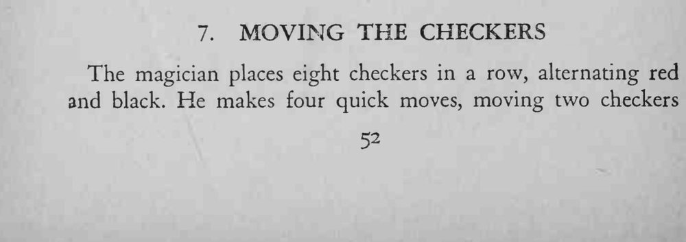
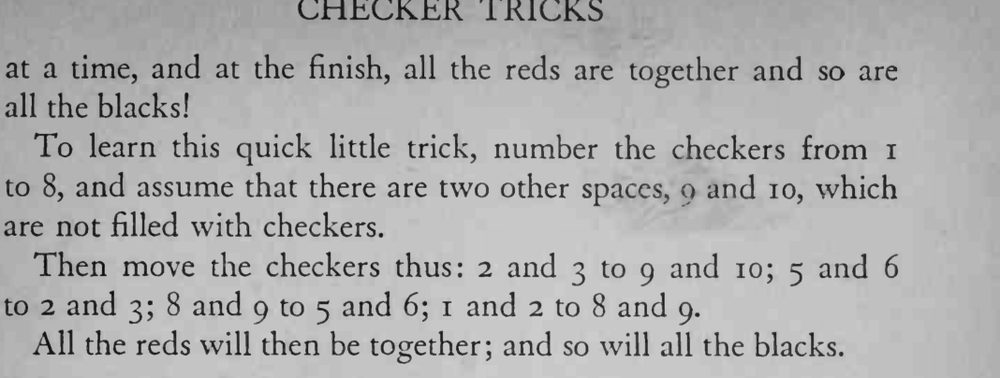

八枚红黑相间的棋子排成一行，魔术师只移四次、每次两枚，就把红棋和黑棋各自归到了一起。
每次必须连拿相邻的两枚整体平移，编号或空位错一个就排不回来。


The magician places eight checkers in a row, alternating red and black. He makes four quick moves, moving two checkers at a time, and at the finish, all the reds are together and so are all the blacks! To learn this quick little trick, number the checkers from I to 8, and assume that there are two other spaces, o and 10, which are not filled with checkers. Then move the checkers thus: 2 and 3 to 9 and 10; 5 and 6 to 2 and 3; 8 and 9 to 5 and 6; 1 and 2 to 8 and 9. All the reds will then be together; and so will all the blacks.